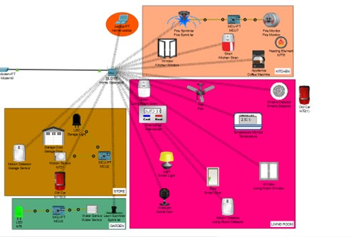
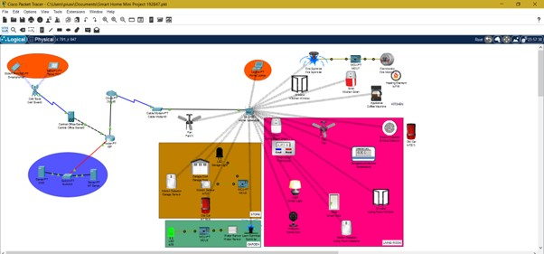
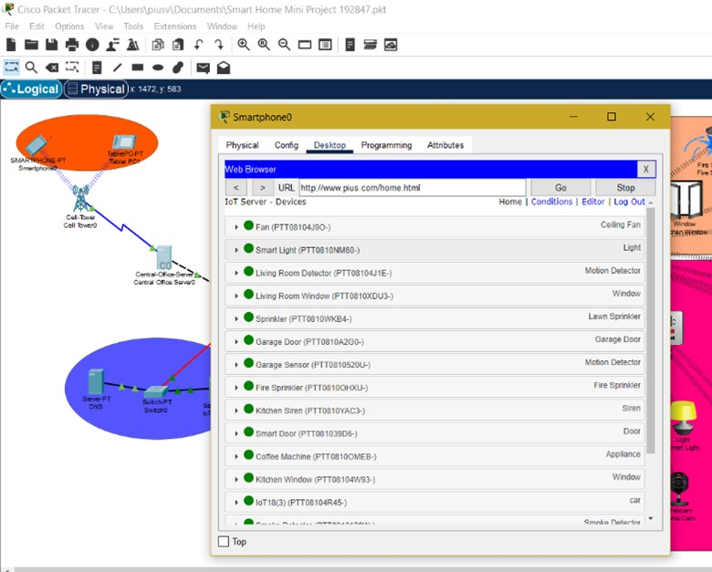
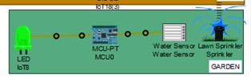
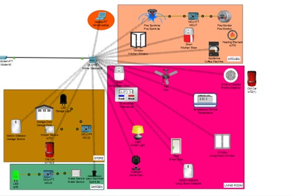
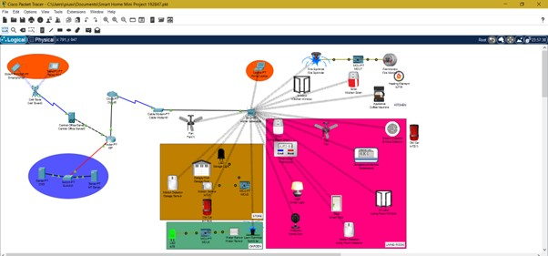
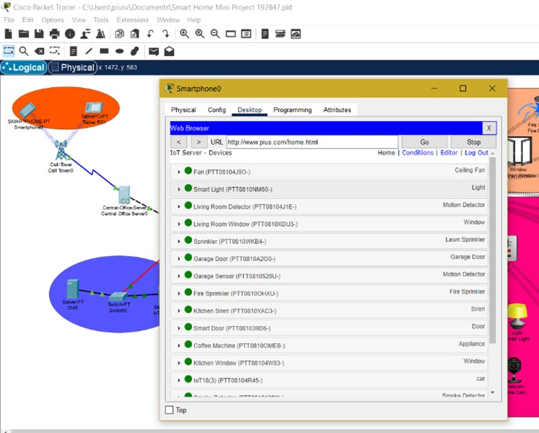
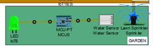

Pius Amartey
Internet Of Things
About Project
analyses the City of London dataset from January 2022 to January 2023 to determine the City of London neighbourhood with
the lowest crime rate. The study employs descriptive statistics, data visualisation techniques, and clustering analysis to i
dentify areas with high crime rates and recurrence patterns. The report identifies neighbourhoods with high crime rates and provides
recommendations for secure neighbourhoods based on the research. This work can assist those seeking safer areas
in the City of London and also contribute to the broader community of crime analysis





Skills
- Proficiency in Cisco Packet Tracer
- Experience in integrating various smart appliances and devices
- Familiarity with networking protocols and configurations for IoT applications
- remotely control and monitor smart devices
- Data Loading and Preprocessing
- Understanding of Internet of Things (IoT) concepts and knowledge of smart home technology and applications
About Project
analyses the City of London dataset from January 2022 to January 2023 to determine the City of London neighbourhood with the lowest crime rate. The study employs descriptive statistics, data visualisation techniques, and clustering analysis to i dentify areas with high crime rates and recurrence patterns. The report identifies neighbourhoods with high crime rates and provides recommendations for secure neighbourhoods based on the research. This work can assist those seeking safer areas in the City of London and also contribute to the broader community of crime analysis




Skills
- Proficiency in Cisco Packet Tracer
- Experience in integrating various smart appliances and devices
- Familiarity with networking protocols and configurations for IoT applications
- remotely control and monitor smart devices
- Data Loading and Preprocessing
- Understanding of Internet of Things (IoT) concepts and knowledge of smart home technology and applications